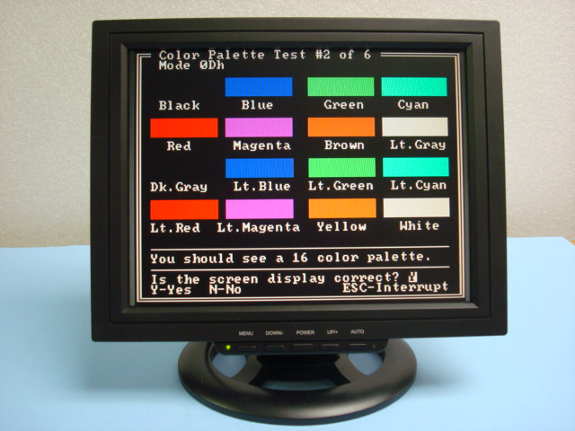
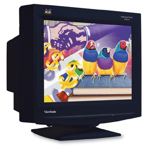
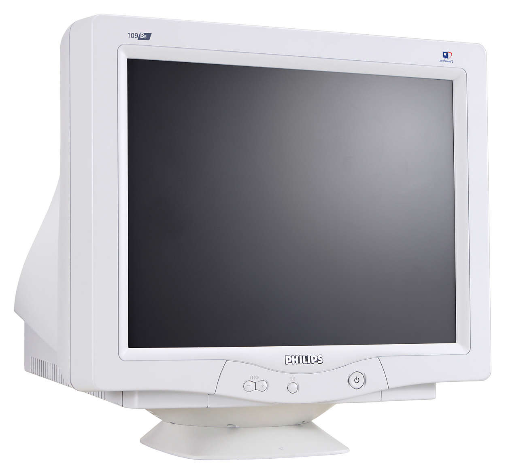

Evolução ao Longo do Tempo
Os monitores de computadores são a principal unidade de saída dos computadores, uma unidade de muita importância uma vez que é atravez dela que conseguimos ver e analisar o que estamos a operar num computador. Os monitores, tal como todos os outros aparelhos eletrónicos de grande importância, têm vindo a ser alvo de grande evolução. Começando por ser dispositivos que comunicavam com o utilizador atravéz de luzes que se acendiam e apagavam em determinadas posições em função das intruções que executavam, evoluindo depois para monitores capazes de apresentar algumas cores e com resoluções já consideráveis, até se desenvolverem os monitores que hoje são utilizados na grande maioria dos computadores que já são capazes de exibir milhões de cores e pussuem resoluções de exibição muito maiores que os anteriores. Os primeiros computadores comunicavam a partir de pequenas luzes, que se acendiam ou se apagavam ao aceder a determinadas posições de cor ou a executar certas instruções. Anos mais tarde apareceram computadores que funcionavam com cartão perfurado, que permitiam introduzir programas no computador. E só na década de 70 surgiram os primeiros monitores CRT estes seguiam o Monocromatic Display Adapter (MDA), e eram monitores monocromáticos que exibiam uma única cor, o verde.
Monitores CGA e EGA
Os monitores Color Graphics Adapter (CGA), foram comercializados em 1981 e com eles desenvolveu-se a primeira placa de vídeo colorida da International Business Machines (IBM). A placa de vídeo padrão era equipada com 16 kbytes de memória de vídeo, considerava-se que a placa era capaz de exibir um máximo de 4 cores numa resolução de 320x200, contúdo, havia diversas formas (algumas oficiais, outras não) de exibir mais cores. O padrão de vídeo Enhanced Graphics Adapter (EGA) foi criado em 1984 pela IBM, sendo o segundo padrão gráfico colorido na história dos microcomputadores IBM PC. As capacidades gráficas dos microcomputadores compatíveis com IBM PC no padrão CGA eram limitadas e o novo adaptador acrescentou novos modos de vídeo e uma maior quantidade de cores exibíveis simultaneamente. O padrão EGA foi importante para o avanço e popularização dos microcomputadores pessoais da IBM, já que no mesmo ano do seu lançamento, outros fabricantes produziam computadores de oito bits com capacidades gráficas superiores. O EGA foi bastante utilizado até meados de 1987, altura em que o padrão VGA passou a dominar o mercado com os PCs de 32 bits Intel 80386 de alta velocidade.
Monitores VGA
Em 1987 apareceu o Video Graphics Array (VGA) foi um monitor que teve muito sucesso no mercado e dois anos mais tarde foi melhorado e redesenhado para solucionar certos problemas que surgiram, desenvolvendo assim o Super VGA (SVGA), que também aumentava as cores e as resoluções, para este novo monitor desenvolveram-se placas de vídeo de fabricantes que ainda hoje são conhecidos, tais como S3 Graphics, NVIDIA ou ATI entre outros. Com estes apareceram também as versões melhoradas dos monitores CRT.
Monitores CRT
Um monitor CRT é um monitor que utiliza um tubo de raios catódicos para criar imagens. Um tubo de raios catódicos é um tipo de válvula eletrónica que contém um ou mais canhões de eletrões e um ecrã fluorescente utilizado para ver imagens. Durante os anos 60, a forma mais comum de interagir com um computador mediante uma máquina de escrever, que se ligava diretamente a este e pegava todos os dados de uma sessão informática. Foi a forma mais barata de visualizar os resultados até a década dos 70, quando começaram a aparecer os primeiros monitores de CRT (tubo de raios catódicos). Seguiam o regular MDA (Monochrome Display Adapter), e eram monitores monocromáticos (de uma cor apenas) de IBM. Estavam expressamente desenhados para modo texto e suportavam sublinhado, negrita, itálico, normal e invisibilidade para textos.